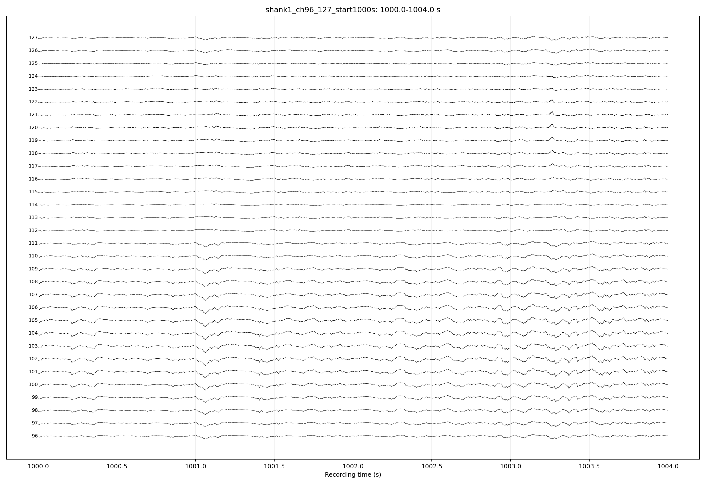
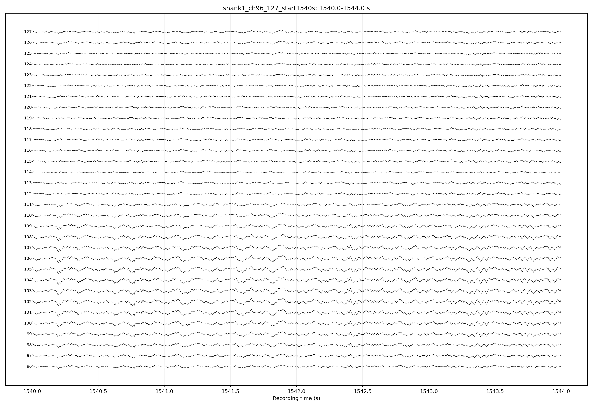
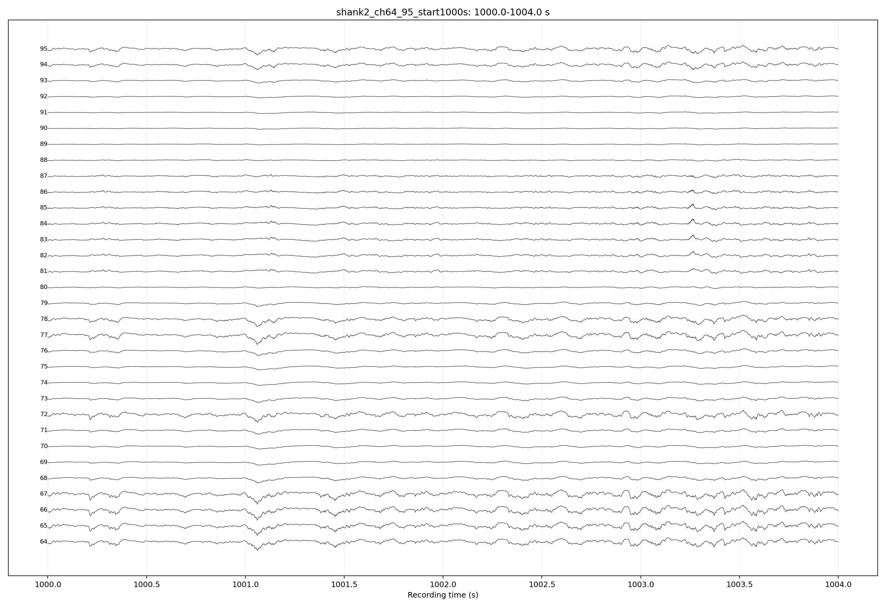
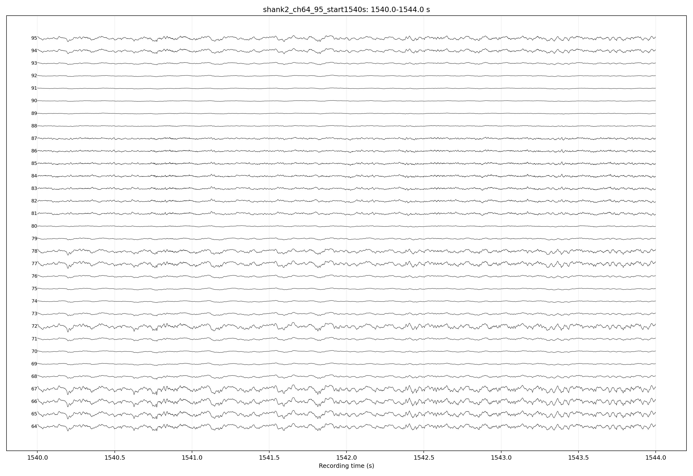
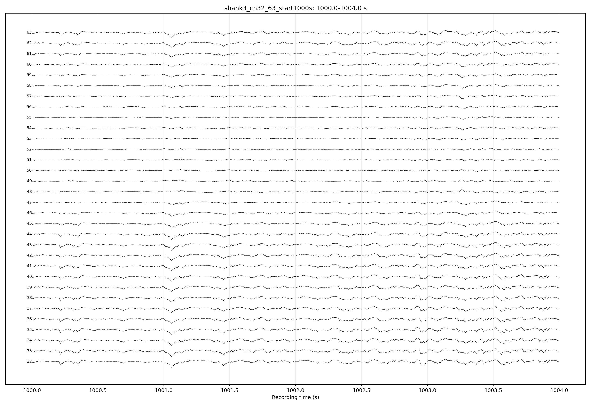
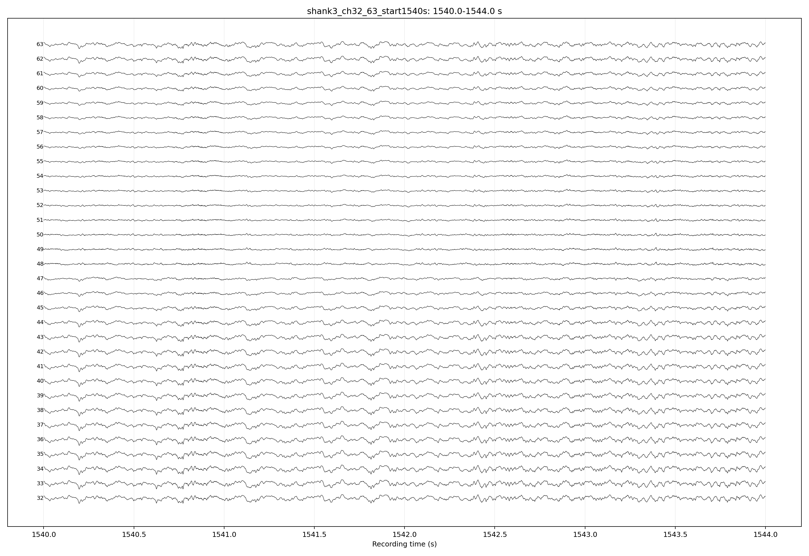
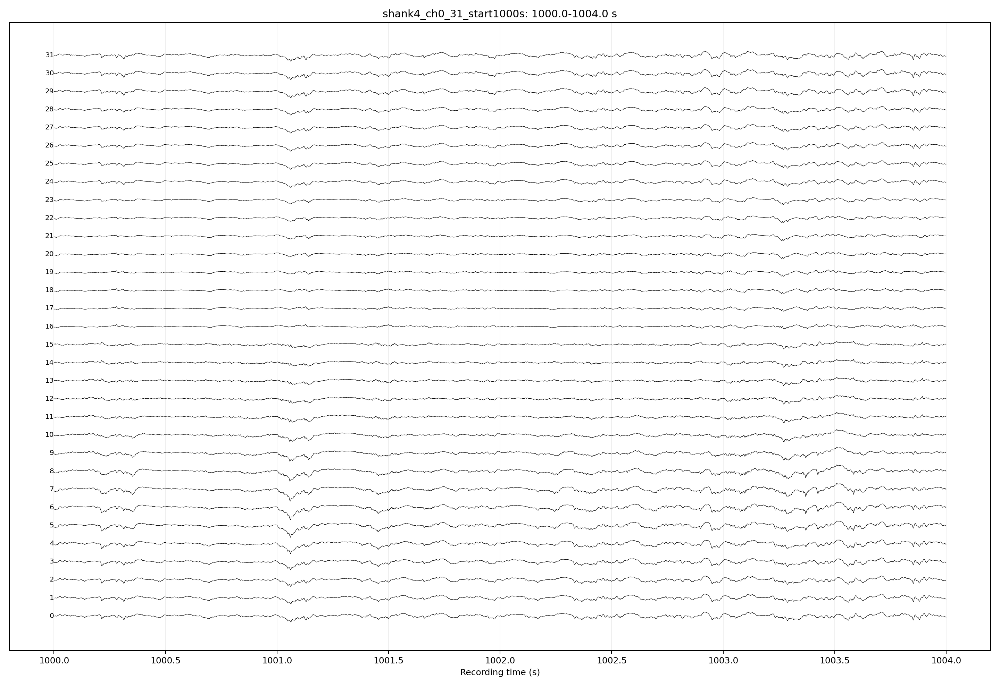
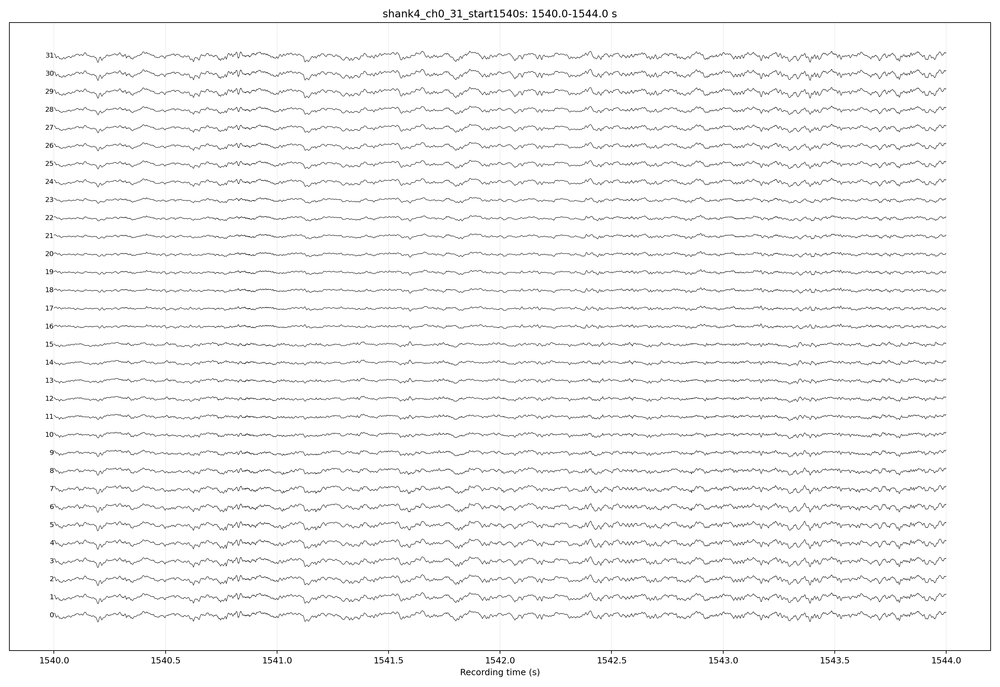

Dec 3 LFP Trace Pages
Generated from amplifier.lfp at 1250 Hz, corrected 128-channel layout.
shank1_ch96_127_start1000s.png

shank1_ch96_127_start1540s.png

shank2_ch64_95_start1000s.png

shank2_ch64_95_start1540s.png

shank3_ch32_63_start1000s.png

shank3_ch32_63_start1540s.png

shank4_ch0_31_start1000s.png

shank4_ch0_31_start1540s.png
